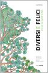
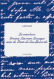
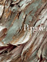
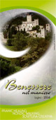
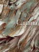

9+1=10 Diversi e felici
Racconti musicali
Pianisti: Isabella Lo Porto e Corrado Ruzza
Attrice: Sabrina Simonetto
Domenica 14 dicembre 2008 - ore 20.30
TRENTO - Sala Fisarmonica, Via Verdi
Mercoledì 17 dicembre 2008 - ore 18.00
VERONA - Castelvecchio
Venerdì 19 dicembre 2008 - ore 18.00
RIVA DEL GARDA - Conservatorio Musicale
Martedì 4 novembre 2008 - ore 17.00
Presentazione del volume La marchesa Gemma Guerrieri Gonzaga nata de Gresti di San Leonardo
di Luisa Pachera, Edizioni Osiride presso la Tenuta di San Leonardo, Avio (TN).
l'invito della presentazione
Domenica 26 ottobre 2008 - ore 20.00
Rappresentazione in prima assoluta del monologo teatrale La rivoluzione di Osvaldo di Luisa Pachera recitato
da Alvise Campostrini. Seguirà la premiazione del Concorso nazionale di narrativa Grenzland indetto dalla rivista
Radici. Presso la Cantina sociale di Avio, via Dante 14.
Venerdì 24 ottobre 2008 - ore 20.30
Presentazione dei libri Pergole e Cantina presso la Biblioteca di Caprino Veronese,
palazzo Carlotti, con rinfresco.
Primo premio letterario nazionale "Grenzland, Terra di confine"
La rivista Radici bandisce il primo premio letterario nazionale “Grenzland, Terra di confine” per un racconto che
sia la continuazione di un incipit dato. [*]>
Il testo in italiano dovrà avere la lunghezza massima di 6.300 battute (incipit e spazi inclusi) e dovrà essere spedito
entro il 21 settembre 2008 a: Redazione Radici, via Dante 14, 38063 Avio (Tn).
Il plico dovrà contenere cinque copie cartacee e anonime del racconto e una busta chiusa con i dati e l’indirizzo
dell’autore.
Il concorso è aperto a tutti e gratuito.
La giuria sceglierà, a suo insindacabile giudizio, i tre racconti migliori che saranno premiati durante il primo Festival dell’Enantio.
Il racconto vincitore sarà pubblicato sulla rivista Radici.
[*Incipit]
La ragazza salì le scale di corsa, spinse la porta ed entrò nella stanza in penombra. Dalla finestra filtrava una luce flebile
che illuminava un tavolino apparecchiato. Sui bicchieri colmi di vino scuro si rifletteva la fiamma di una candela accesa.
Per informazioni rivolgersi al direttore della rivista:
radici@luisapachera.it
Componenti giuria:
- Mario Allegri, professore di Letteratura italiana moderna alla Facoltà di Lettere e Filosofia di Verona
- Margherita Cogo, Assessore alla Cultura della Provincia autonoma di Trento
- Mauro Festini Brosa, editore della casa editrice Osiride
- Luisa Pachera, direttore responsabile della rivista Radici
Benessere nel maniero
Castello di Avio - luglio 2008
Mercoledì 23 e 30 luglio: Scrittura creativa nel castello di Avio.
Due giornate per rilassarsi tra la natura e la storiae per scrivere in mia compagnia.
depliant della manifestazione
Storie e Sapori 2008
Dolcé di Verona
Venerdì 30 maggio alle 20.30 nel teatro Undenheim di Dolcé si terrà la presentazione dei libri “Pergole e Cantina”
della scrittrice Luisa Pachera. Allieteranno la serata la lettura di alcuni brani dei testi e poesie dialettali e la musica
del quintetto d’ottoni “Pinta Brass”.
Seguirà buffet con degustazione dei vini Terradeiforti. |